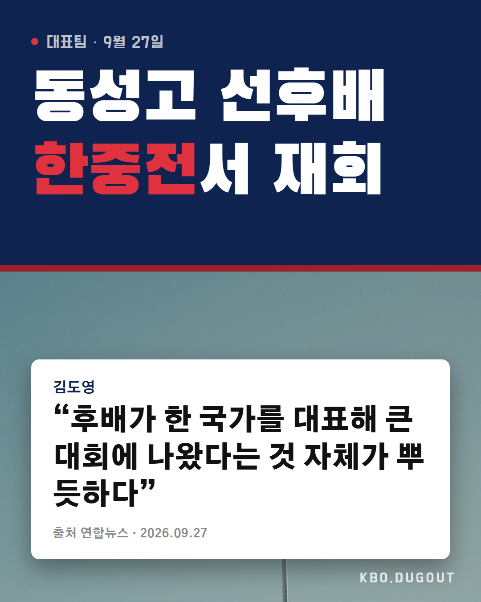

선배 타구가 하필 후배한테 가는 거 뭔 운명이냐 ㅋㅋㅋ 리옌언 꿈 안 놓고 대표팀까지 간 거 진짜 멋있다
QA 없음
선배 타구가 하필 후배한테 가는 거 뭔 운명이냐 ㅋㅋㅋ 리옌언 꿈 안 놓고 대표팀까지 간 거 진짜 멋있다
QA 없음

Asian Games reunion with a high school junior now on China's team. 동성고 선후배가 아시안게임에서 적으로 만나다니 이런 게 야구 낭만이지 #KBO #프로야구 #야구 #김도영 #KIA타이거즈
QA too_long
0-5로 지고 이틀 만에 리턴매치 ㄷㄷ 오늘 일본 상대로 선발 누가 나갈 거 같음??
QA 없음